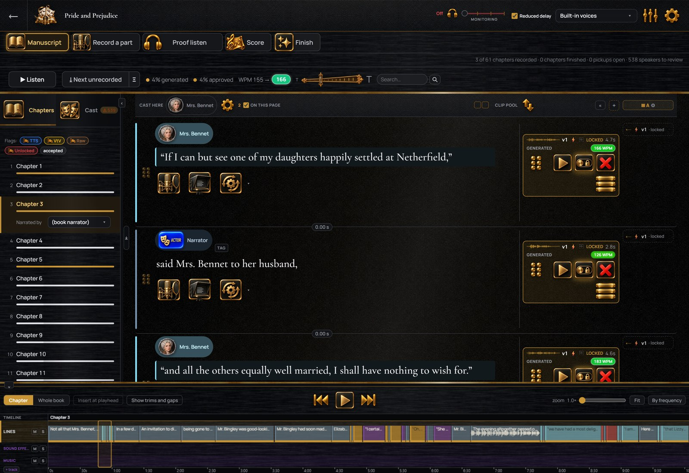
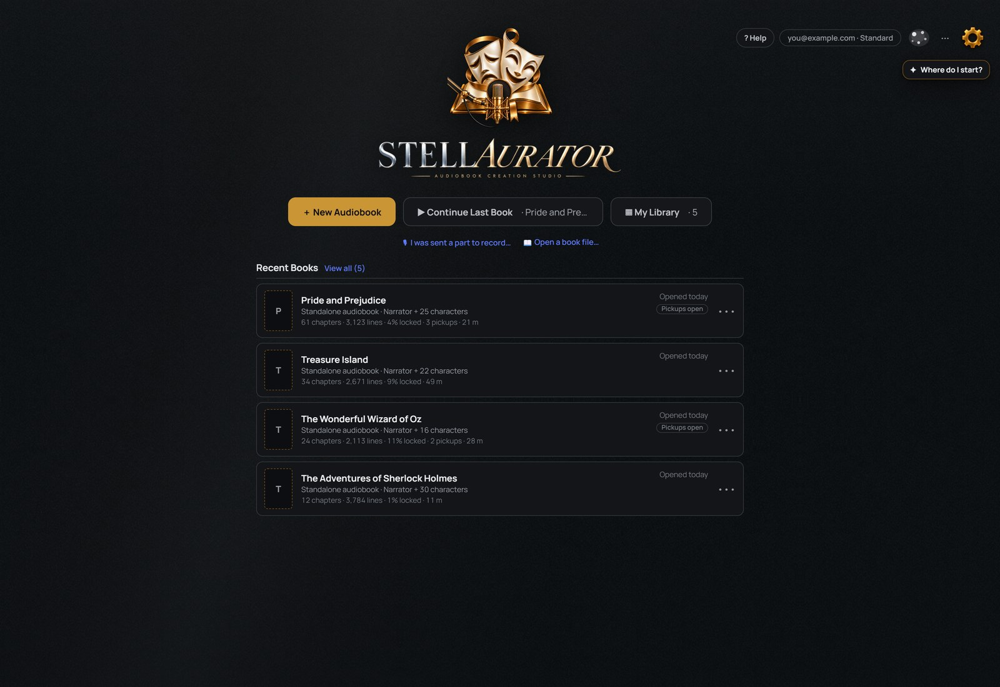
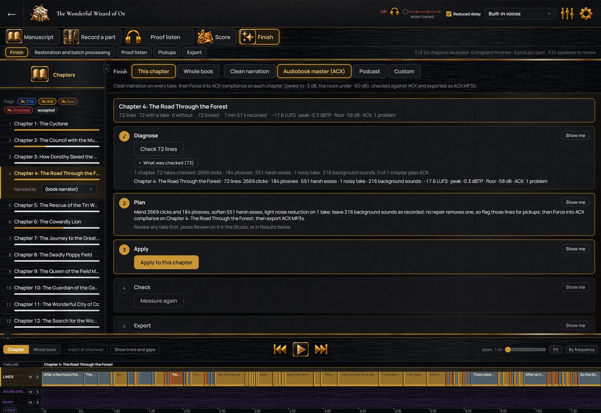

Every take is kept
Every recording of a line is kept until you delete it.
An audiobook studio for Windows
Record from your manuscript, fix single lines, and prepare your chapters in one Windows program. Every recording stays on the line of the manuscript it belongs to.
For Windows 10 and 11, 64-bit. Free for 7 days. No credit card. Everything is included except exporting the finished audiobook, which needs a plan. Your work stays on your computer. You make your account inside the app.
On a Mac or a phone? A Mac version and phone apps are on the way. Get notified when yours is ready.

Hear the difference
These are real recordings made in StellAurator, before and after processing.
How it works
All six steps happen in one window, and your progress is saved as you go.

Your manuscript, connected to your audio
Each line has its own row, with every recording, fix and note for that line.
Every recording of a line is kept until you delete it.
A spool is one complete reading of the book, and either spool can be exported.
The strip at the top counts the chapters recorded and finished.
Record your way
Read a whole chapter from the on-screen script, or record one line at a time.

When you stop, the recording is split into the manuscript’s lines.
Each actor records their part in a free copy, from an invitation link.
Convert your reading into the characters’ voices, or use 26 included voices.
Get an ElevenLabs account if you want its voices. StellAurator is an independent affiliate of ElevenLabs and is paid a commission if you subscribe after following this link. You can also go to elevenlabs.io directly.
More about recording · More about voices and voice conversion
Edit, perfect and finish
Every fix can be heard before and after, and every fix can be undone.

Clicks, pops, plosives, breaths, hum and noise are found as you record.
Diagnose, Plan, Apply, Check and Export, for a chapter or the whole book.
Loudness, peaks, noise floor and file format, with a pass or fail result.
Your book stays yours
Your manuscript and recordings are never uploaded to us, unless you turn on Nebula, the optional cloud storage. Nebula encrypts each book on your computer before it is uploaded, with keys only your computers hold, so we cannot open it.
Your account holds your email address and your plan, and nothing about your book.
Text is sent only to the services you connect, under your own account.
When a plan ends, every book still opens and plays, and nothing is deleted.
What it costs
StellAurator gives you the recording, editing and finishing tools; you provide the performance, the time and the recording setup. Hiring the production out costs about $3,400, paid to other people, at ACX’s planning figures for an 80,000-word novel.
If you hire it out
Narration, editing and mastering for one book.
With StellAurator
While you are recording and finishing.
Every book you make that year.
Ratings
*We’re in alpha. These ratings come from the people testing StellAurator now, rating how the alpha is going, not a finished product.
Pricing
Everything is included except exporting the finished audiobook. A plan adds export, on up to three computers.
No card. Nothing is charged when it ends.
Cancel anytime, in two clicks.
Two months free.
Free for 7 days, no card. Exporting the finished audiobook needs a plan. Your book stays on your computer, and a plan can be canceled anytime, in two clicks.
Why I built StellAurator
I’m an author. When I started working on the audiobook for my novel, I realized pretty quickly that none of the software I was finding was actually made for authors. Everything was designed for recording music or podcasts. I wanted something where I could work directly from my manuscript, record my lines, and have everything organized without having to constantly switch between programs. I couldn’t find what I wanted, so I built it myself. That’s how StellAurator came about. It’s the software I built to make my own audiobooks.
J.T. Michaelstar
Questions
No. Any microphone Windows can see works, from a USB microphone to a studio microphone through an interface. The best choices for an audiobook, by budget, are in the microphone guide.
No. Computer voices and voice conversion are optional. Twenty-six voices are included and work offline. A paid voice service is needed only for its own voices or for voice conversion, and it bills you directly. The voices and services, in full.
Nothing is charged: we never asked for a card. When the trial ends, your books stay on your computer and still open and play. Recording, generating and editing wait for a plan. Subscribe when you want to carry on.
Yes. What you make is yours, and the exported files meet the specifications of Audible’s ACX and other stores. You are responsible for the rights to your text and to any real person’s voice you use. Files with computer-generated narration are marked as such.
No. The manuscript stays on your computer. Text is sent only to the voice and AI services you choose to connect, under your own account. The one exception is Nebula, the optional cloud storage: if you turn it on, each book is encrypted on your computer before it is uploaded, and we cannot open it.
For now: 64-bit Windows 10 or 11. The installer is signed, so Windows shows the publisher when you run it. A Mac version is on the way, and phone apps for recording are planned after it. Leave your email and we will tell you when yours is ready.
No card required. A practice book is included and takes you through casting, recording and clean-up. Exporting the finished audiobook comes with a plan.